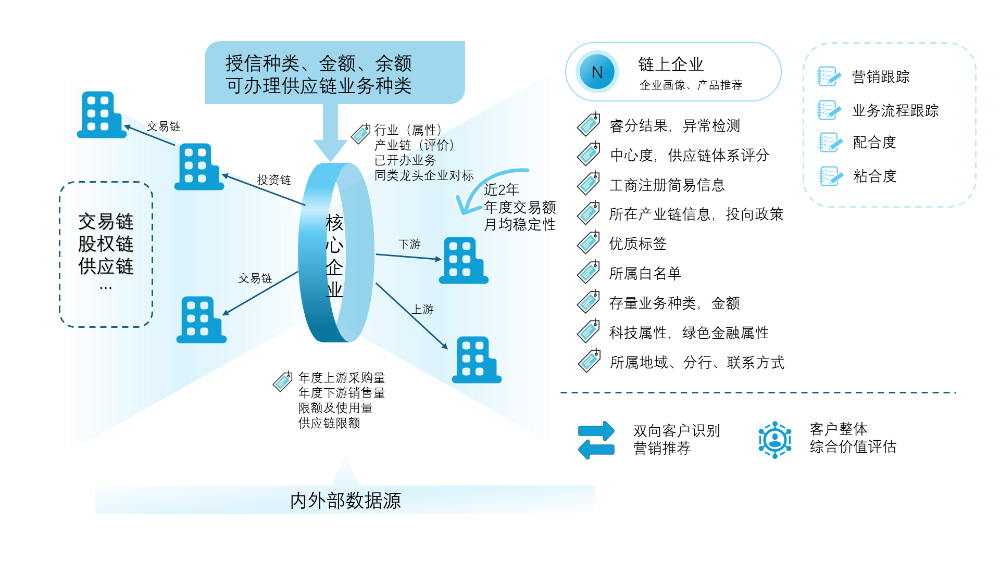
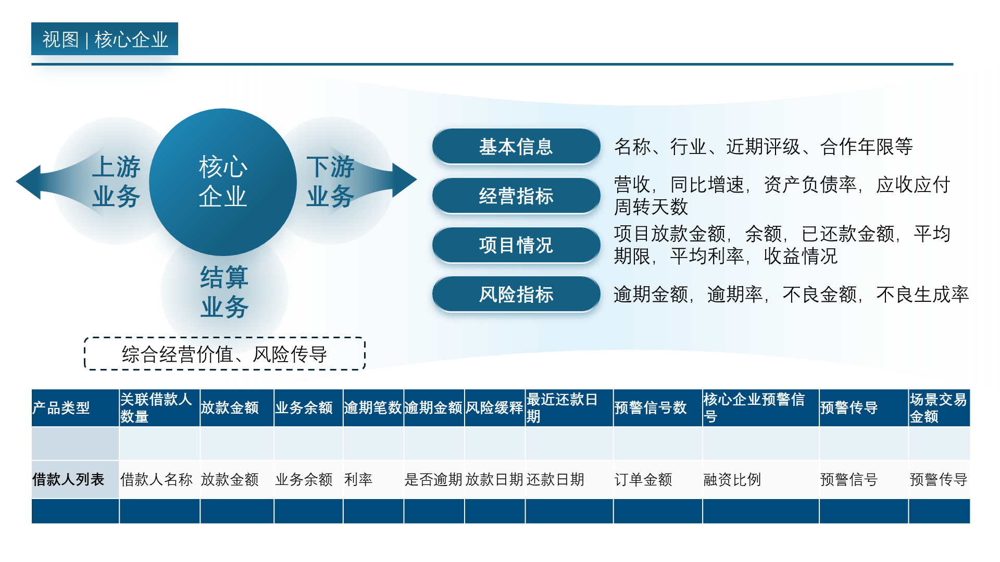
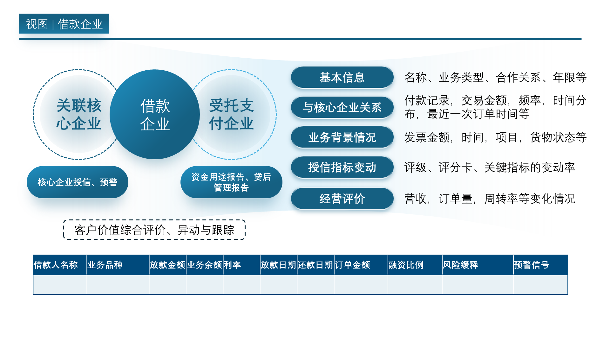
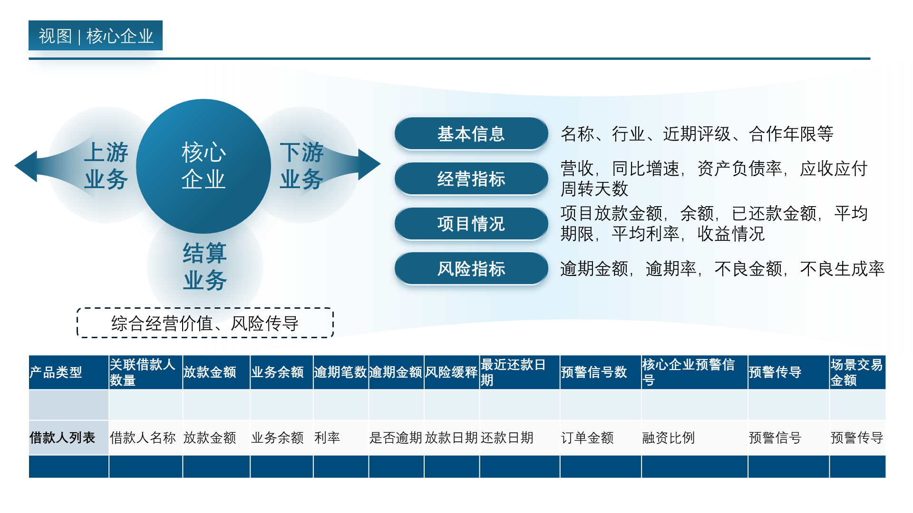
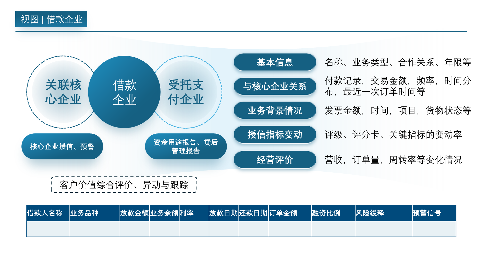
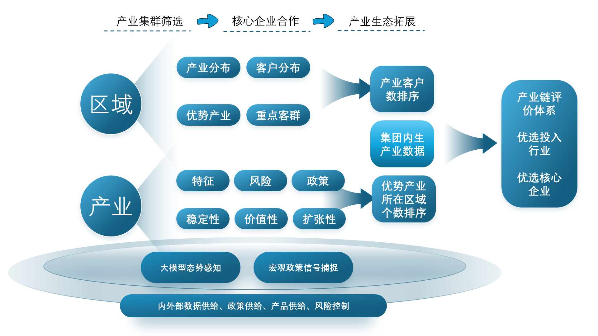
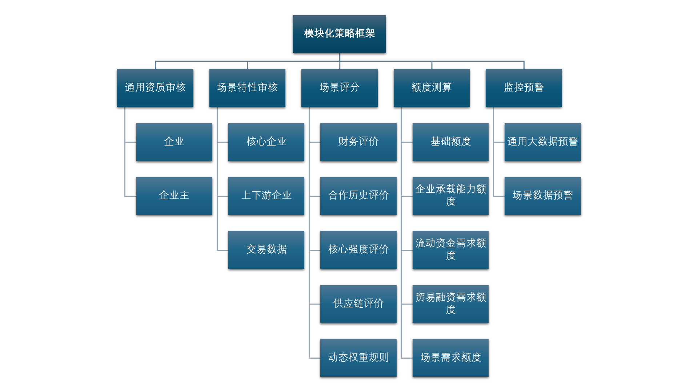

供应链业务智能化赋能行动方案
V2.1
业务愿景
通过构建一个智能化的供应链生态平台，实现三大核心转变，将我行打造为产业生态中不可或缺的、具备平台化运营能力的领导者。
产品销售 → 客户经营
以平台为核心，深度融入并服务于客户的经营全过程
业务线上化 → 平台生态化
通过数智化建设，构建起一个完整的业务生态平台
工具支撑 → 商业模式创新
通过数据智能驱动商业模式的持续创新
支柱一：打造经营平台
做“好用”且“粘人”的银行
一线声音
渠道分散体验差：迫切需要统一的客户及业务平台。
流程繁琐效率低：希望一次性审核材料，并提供标准化产品敏捷上线。
行动方案
改变渠道分散、功能割裂的现状，实现从服务“渠道”到赋能“客户经营”的转型
1. 打造统一的客户经营平台
整合相关对公入口，构建覆盖账户、支付、融资等一体化平台，并同步建设API开放平台。
2. 优化客户及客户经理旅程
推动标准化业务自动审批，实现流程参数化、模块化。优化融资旅程，做到“一次填报、一次审核”。
支柱二：驱动数据智能
做“聪明”且“预见”的银行
一线声音
数据孤岛效率低下：需在多系统切换，贷后与审批脱节。
自动化程度不足：贷款用途检查、报告生成、发票录入等依赖人工。
行动方案
建设数据和科技中台，为前台的客户经营提供智能辅助，从“人海战术”转变为“数据驱动”
1. 优化“客户与业务”数据服务
整合内外部数据源，分析交易、结算等数据，构建资金“血缘”关系模型，为营销、审批、贷后提供参考。
2. 穿透式客户经营
穿透核心企业，实现对全链条客户的统一画像、评级、营销及服务的管理。
3. 构建客户与资产综合价值体系
设计多层次资产管理视图，监控资产组合风险收益，并对经营异常进行动态预警。
支柱三：引领产业生态
做“懂行”且“创新”的银行
一线声音
客户画像不深：不了解客户在产业链中的地位。
场景拓展困难：希望有脱核或基于流水的模式创新。
工具支持不足：缺少行业数据和拓客工具。
行动方案
建立行业和产业洞察，融入客户所在的产业链，构建共生的金融生态，实现批量化、平台化的客户经营与风险管理
1. 构建垂直行业深度服务平台
通过行业大模型，深耕重点行业，打造集资讯、融资、撮合、风控于一体的专业化平台。
2. 数据驱动脱核模式
构建不依赖核心企业信用的独立风控模型和融资产品，服务海量中小微企业，抓住“脱核”风口。
支柱一：打造经营平台
1 优化客户融资旅程
核心信息一次填报
合并共享资料，减少重复录入
关键材料一次审核
多环节审核共享审核结果、实时验证
一键融资放款
端到端流程优化简化
2 统一客户经营平台
整合相关对公入口，提供一站式服务
提供经营、财富管理等服务体系和解决方案
API平台
3 场景策略框架引擎
为平台提供敏捷、高效的底层支撑
流程分层、策略分层、客户分层
核心/供应链企业同查、多人同查
阈值即时修改、敏捷更新、规则共享
支柱二：驱动数据智能
穿透式客户经营
穿透核心企业，抓取并经营其上下游N个客户，实现全链条的统一画像、评级与服务。
构建客户与资产综合价值体系
设计多层次资产管理视图，监控风险收益，并对客户经营异常进行动态预警。
 



支柱三：引领产业生态
构建垂直行业深度服务平台
通过行业大模型整合宏观政策与产业数据，深耕重点行业，打造集资讯、融资、撮合、风控于一体的专业化平台，实现商业模式创新。
数据驱动脱核模式
以具体业务场景为蓝本，设计不依赖核心企业信用的独立风控模型和融资产品。采集和分析中小微企业的多维交易数据，持续迭代模型，抓住脱核风口。
